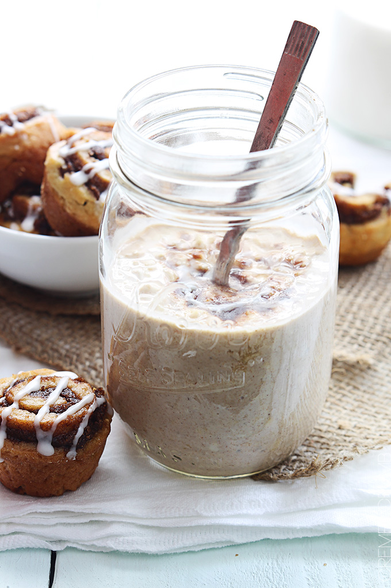

Back
Blueberries and Cream Oatmeal
Ingredients
- ½ cup vanilla greek yogurt
- ½ cup old fashioned rolled oats
- ½ cup milk
- 3 teaspoons brown sugar
- 1 teaspoon cinnamon
- 1 tablespoon cream cheese, softened
- 3 tablespoons powdered sugar

Instructions
- Combine greek yogurt, oats, milk, brown sugar and cinnamon in a sealable container (I use a mason jar) and stir until smooth.
- In a small bowl whisk together softened cream cheese with powdered sugar. Add to oat mixture and stir until smooth. Cover and chill 8 hours or overnight. Serve chilled.
Source